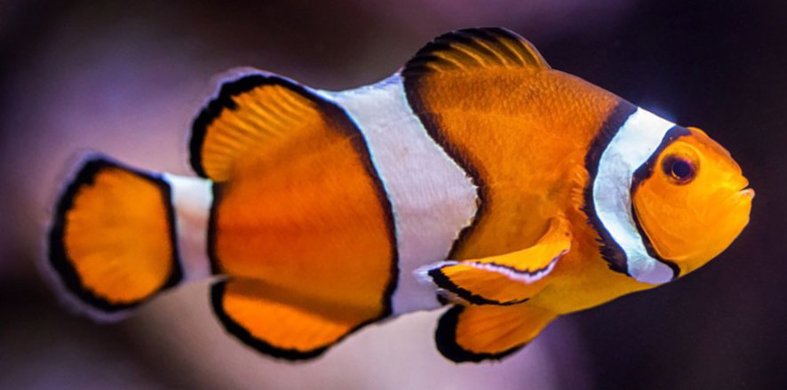
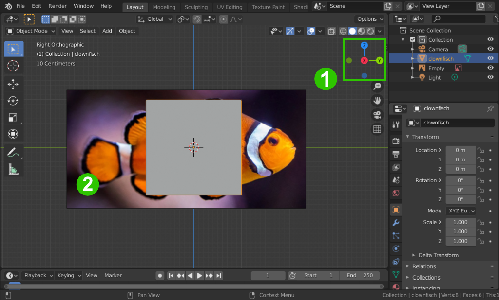
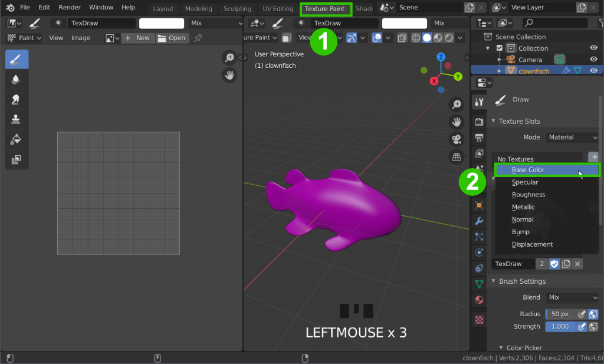
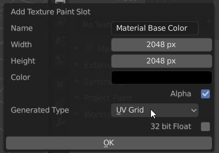
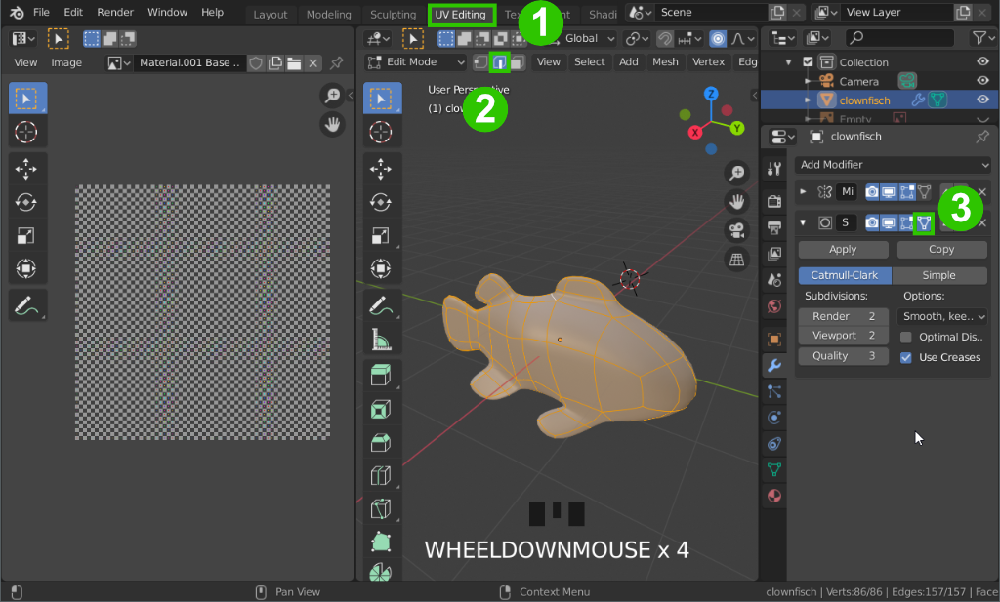
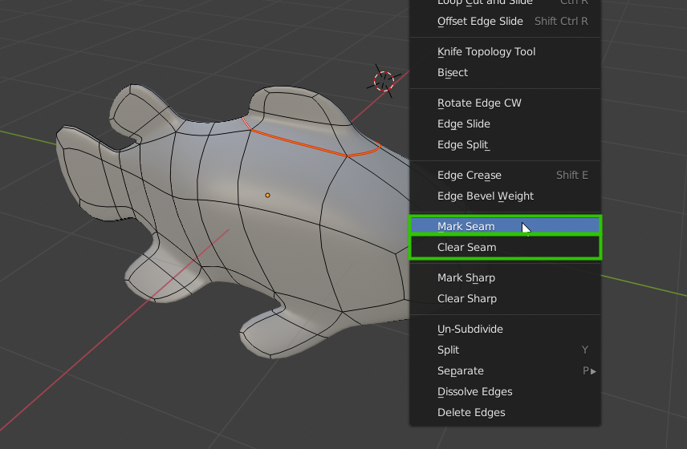
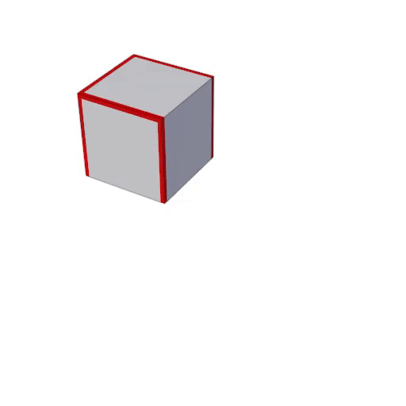
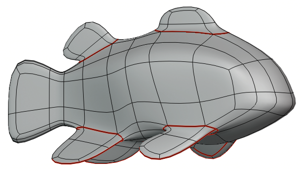
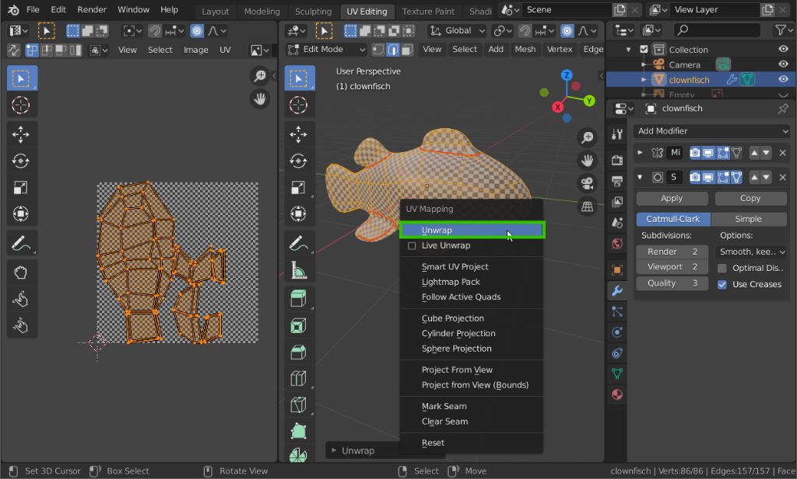
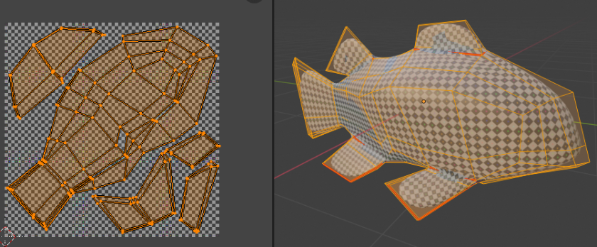

Übung 5.1 - Ein Fisch und UV Editing
In der folgenden Aufgabe werden wir einen Fisch modellieren und texturieren. Als Beispiel wird in dieser Aufgabe ein Clownfisch modelliert verwendet, die Wahl der Fischart steht euch jedoch offen
1. Vorbereitung
- Sucht die Seitenansicht eines Fisches eurer Wahl im Internet oder verwendet dieses Beispielbild:
{kind=link}


-
Erstellt eine neue Blender Szene
-
Wecheselt in die Seitenansicht 1
-
zieht das Bild per Drag & Drop aus dem Dateiexplorer in die Blender Szene 2 und verschiebt es ca. in die Mitte der Szene.
2. Wiederholung Poly-Modelling
- Selektiert euren Cube und benennt ihn entsprechend um.
-
Verwendet wie in Übung 2 gelernt einen Mirror Modifier, damit ihr nur eine Hälfte des symmetrischen Fisches modellieren müsst.
-
Löscht dazu eine Hälfte des Würfels und fügt den Mirror Modifier, sowie einen Subdivision Surface Modifier hinzu
-
Stellt im Mirror Modifier Clipping an und verwendet 2-3 Stufen für den Subdivision Surfaces.
-
Stellt
RMB→ Smooth Shading an
- Modelliert nun den Fisch grob dem Bild grob nach. Verwendet dazu die in den bisherigen Übungen gezeigten Tools.
Wiederhohlung der modelling Tools
- Hilfreich kann die Shading Dropdown → X-Ray Ansicht sein, um durch das Mesh hindurch das Referenzbild zu sehen.
Das Modellieren ist nicht Hauptfokus dieser Aufgabe - der Fisch muss nicht perfekt sein. Notfalls - wenn der Rest der Aufgabe mit eurem Modell gar nicht klappt, darf auch dieses Modell für den Rest der Aufgabe verwendet werden.
3. UV Nähte markieren
Für den Fisch soll nun eine sogenannte UV-Map erstellt werden, die dafür sorgt, dass 2D Texturen auf einem 3D Objekt dargestellt werden können.
3.1 UV-Grid Textur

-
Wechselt in den Texture Paint Workspace 1
-
Fügt unter Texture Slots eine neue UV-Grid Textur als “Base Color” hinzu 2
-
Stellt die Auflösung auf die gewünschte Größe (z.b. 2048x2048) und wählt als Typ UV-Grid aus

-
Klickt einmal auf den neuen Texturslot, um die Textur anzuzeigen
-
WICHTIG!! Speichert die Base Color Textur links im Image Editor sofort ab. (Image → Save As…)
Diese einfache Karomuster-Textur dient uns später als Hilfe, um Verzerrungen in der Texturprojektion zu erkennen.
- Wechselt in den UV Editing Workspace

-
Wechselt in den UV-Editing Workspace 1
-
Stellt die Ansicht auf Material Preview um (im Header mit Mausrad scrollen oder
Z) -
Stellt den Selektionsmodus auf Kanten (
2)2 -
stellt beim Subdivision Surface Modifier die On Cage Option an, damit die Kanten auf dem Mesh besser angezeigt werden.3

-
Legt Kanten fest an denen die Kanten der UV Map liegen sollen. Wählt dazu im Editmode eine/mehrere Kanten aus (vorher
2drücken, um den Selektionsmodus auf Kanten umzustellen) und drückt Rechtsklick oderU. Wählt im erscheinendem Menü Mark Seam aus. Die so markierten Kanten werden rot hervorgehoben. -
Wollt ihr markierte Nähte wieder löschen, kommt die Option Clear Seam unter Mark Seam zum Einsatz.
Die UV Map kann man sich vorstellen wie z.b. ein Schnittplan für ein Kleidungsstück, das wir dem 3D Körper anziehen. Die Kanten die mit Mark Seam markiert wurden sind hierbei die Nähte. 

Nähte sollten auf jeden Fall um die Flossen herum markiert werden, sowie bei seitlich abstehenden Flossen eine Naht von der umschließenden Naht bis zur Flossenspitze. In der Mitte des Fisches wäre normalerweise auch eine Naht nötig, der Mirror Modifier erzeugt diese jedoch sowieso automatisch. Es soll gedanklich möglich sein, den Fisch mit an den Nähten ausgeschnittenen Papierstücken möglichst verzerrungsfrei zu basteln.
4. Unwraping und UV Editing

-
Wählt im Editmodus den gesamten Fisch aus und drückt
U. Wählt im erscheinenden Menü Unwrap aus. -
Im UV Editor links sollte nun das Mesh des Fisches als 2D Netz sichtbar sein und Karos der Textur sollten auf dem Fisch erscheinen.
-
Sind die Karos stark verzerrt, markiert (wie in Schritt 2 beschrieben) weitere Kanten die euch wichtig erscheinen und Unwraped den Fisch erneut mit
U. -
Falls nötig, schiebt, skaliert und rotiert die sogen. UV-Islands (zusammenhängende Teile der UV Map) die im Image Editor entstanden sind nun so, dass die Kästchen überall auf dem Fisch etwa gleich groß sind und möglichst effizient die Textur ausfüllen. Sie sollten sich an keiner Stelle überschneiden.
-
Die Selektionswerkzeuge funktionieren gleich, wie in der 3D-Ansicht. Mit
Lwerden unter der Maus zusammenhängende Teile der UV-Map selektiert -
Angezeigt im UV Editor werden immer nur die Teile des Meshes, die im 3D Viewport markiert sind.
Die Auswahl und Transformationswerkzeuge funktionieren im UV Editor gleich, wie im Editmode des 3D Viewports.
Aufgabe

-
Modelliert den Fisch und bereitet ihn mittles UV Editing so vor, dass die Karos Checker Textur gleichmäßig und ohne Überlappungen auf dem Fisch dargestellt werden.
-
Anweisungen für die Abgabe folgen in 5.2
Ressourcen & Tutorials zum Thema
| Art/Länge | Titel | Thema | Quelle |
|---|---|---|---|
| 6:25 | UV Unwrapping - Blender 2.80 Fundamentals | Materialien | YouTube - Blender (offizieller Kanal) |
| 12:23 | Blender 2.8 Beginner Tutorial - Part 6: UV Unwrapping | UV-Editing | YouTube - CG Boost |
| 30:00 | 20 Tips to Speed Up UV Mapping in Blender | UV-Editing | YouTube - CG Boost |
| Blender Reference Manual - UV Introduction | UV Dokumentation | Blender Dokumentation |
gelernte Shortcuts
| Funktion | Kontext | Shortcut |
|---|---|---|
| Nähte festlegen (mark seam) | Edit Mode | U |
| Unwrap | Edit Mode | U |
| Zusamenhängende Teile selektieren | Edit Mode / UV-Editor | L |